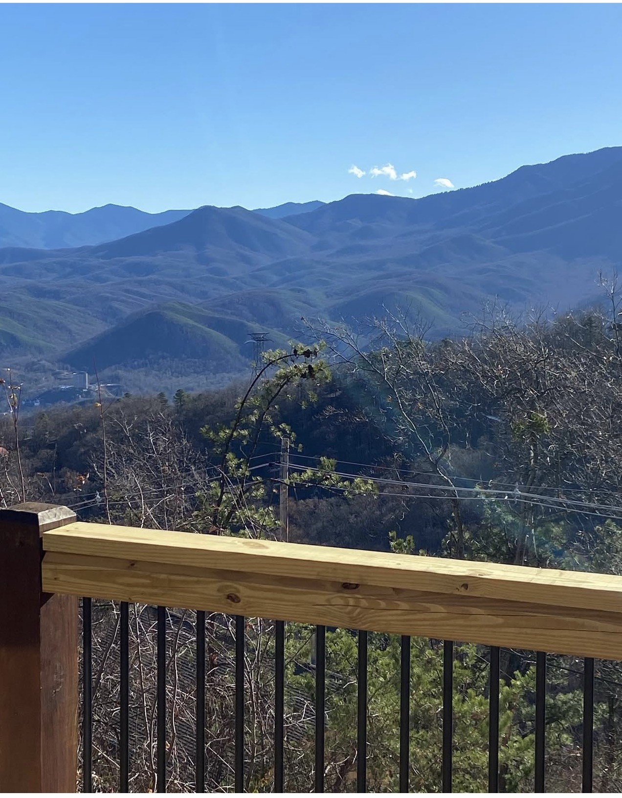
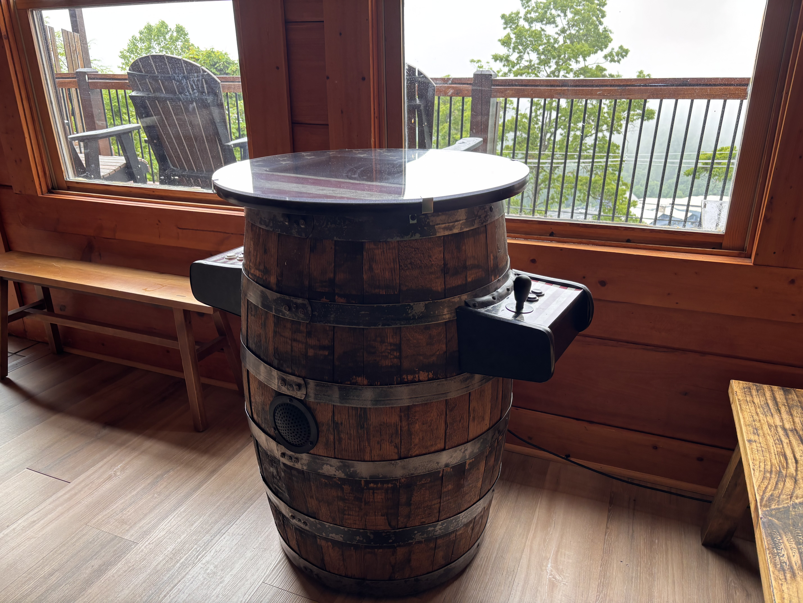
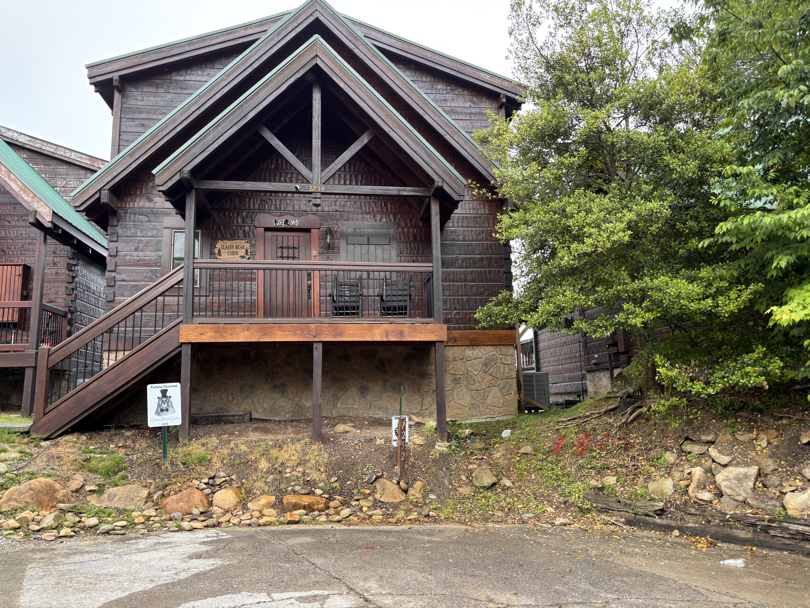
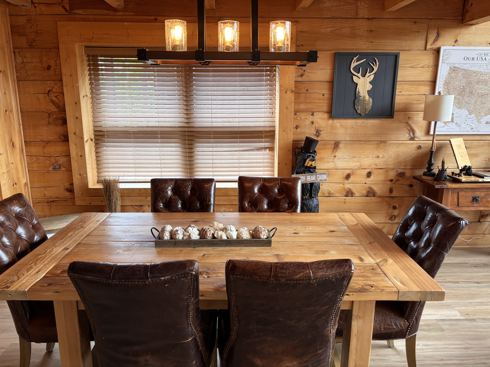
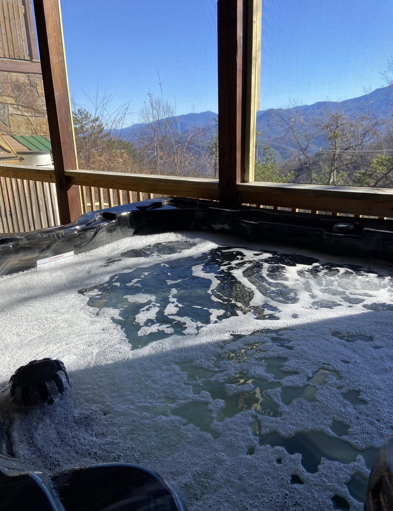
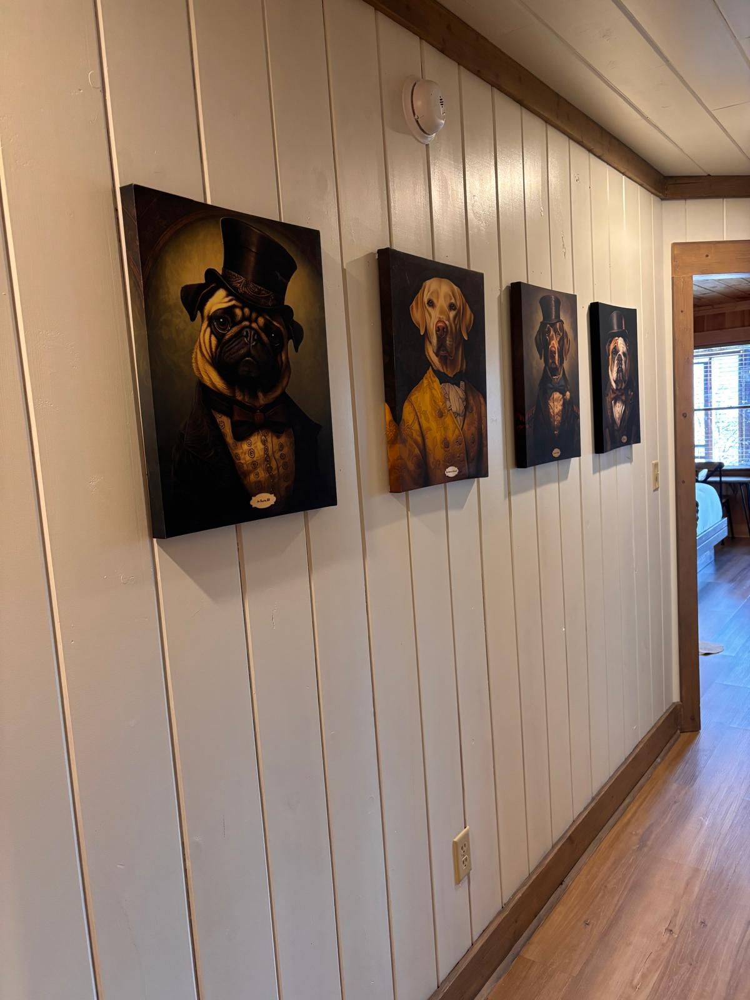
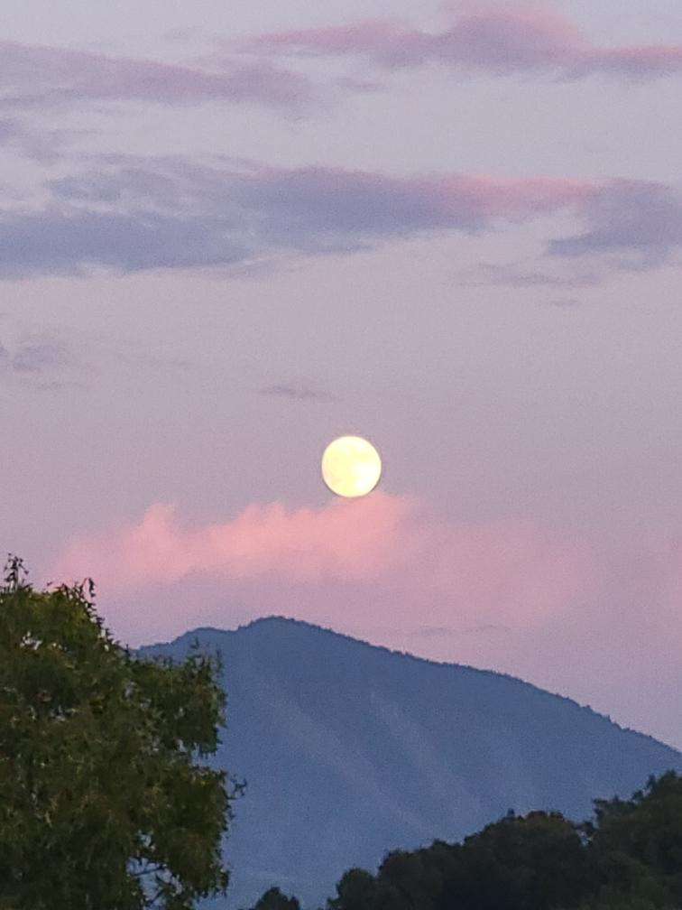
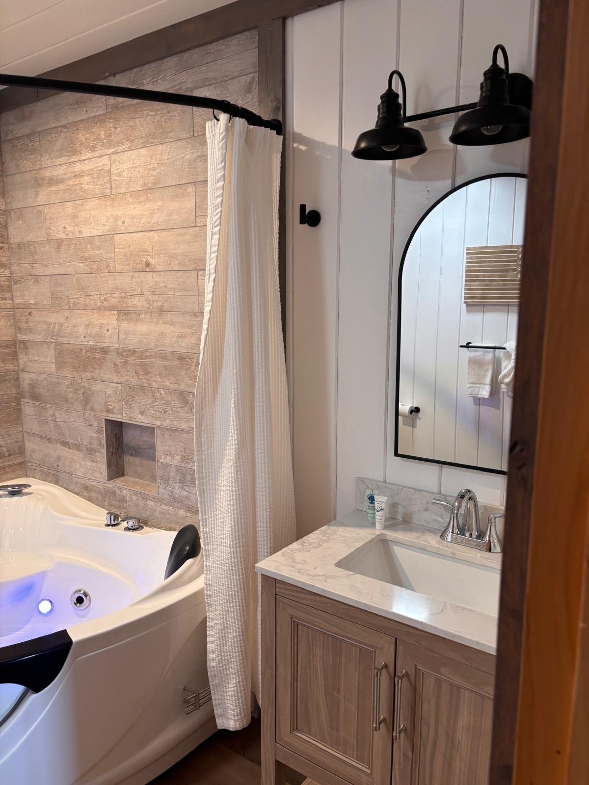

Best Waterfalls Near Gatlinburg
Great Smoky Mountains National Park contains more than 100 named waterfalls within its boundaries. Here's your guide to the best ones.
Read More →Travel tips, local guides, and insider info for your perfect Smoky Mountain getaway

Great Smoky Mountains National Park contains more than 100 named waterfalls within its boundaries. Here's your guide to the best ones.
Read More →
From Dollywood to white water rafting, Gatlinburg has more family-friendly activities than most people realize. Here's what's worth your time.
Read More →
Chalet Village sits above the Gatlinburg corridor at roughly 3,000 feet — a quiet, elevated community that most visitors never discover.
Read More →Two towns. Four miles apart. Entirely different characters. Here's how to decide which is right for your trip.
Read More →Chalet Village sits at roughly 3,000 feet above the Gatlinburg corridor. These directions will help you arrive without detours.
Read More →The dining scene near Gatlinburg has matured well beyond the tourist strip, offering everything from serious Southern cooking to riverside dining.
Read More →
Classy Bear Cabin was designed with groups in mind — three king suites, a loft bunk room, arcade games, and mountain views that bring everyone together.
Read More →
A private hot tub, summit views, and no neighbors in sight. Gatlinburg has a quieter, more intimate side worth knowing about.
Read More →From easy waterfall walks to ridge-top panoramas, these five trails cover the best the Smokies have to offer.
Read More →
From Dollywood's flower festival to live music, craft fairs, and perfect hiking weather — May is one of the best months to visit the Smokies.
Read More →
Discover wildflower season, Dollywood's Festival of Nations, live shows, perfect hiking weather, and everything April has to offer.
Read More →
Discover the refined touches that make Classy Bear Cabin truly special — from chromotherapy whirlpool tubs to custom artwork and herringbone backsplash.
Read More →
Experience the magic of the Smoky Mountains at dawn and dusk. All photos captured from Classy Bear Cabin.
Read More →
Skip the tourist traps. Discover fine dining, wine tastings, spas, and refined experiences in the Smokies.
Read More →
Everything you need to know — best times to visit, must-do rides, insider tips, and where to stay near the park.
Read More →
Skip the crowded beaches. A Smoky Mountain cabin is the perfect Spring Break destination for families.
Read More →
Everything you need to know about renting a cabin in Gatlinburg — from choosing locations to insider booking tips.
Read More →
Forget crowded restaurants and predictable gifts. This Valentine's Day, give the gift of a romantic mountain getaway.
Read More →
Discover why winter in the Smokies offers a magical experience with fewer crowds and cozy cabin vibes.
Read More →
From world-class dining to thrilling adventures, discover the best attractions just minutes away.
Read More →
See why guests rave about their stay and keep coming back to our luxury mountain retreat.
Read More →
Experience the magic of 3 million lights, festive attractions, and cozy cabin vibes for an unforgettable mountain Christmas.
Read More →Book direct and save 15% — no OTA fees, direct owner contact
Check Availability